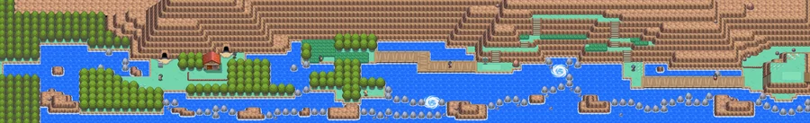
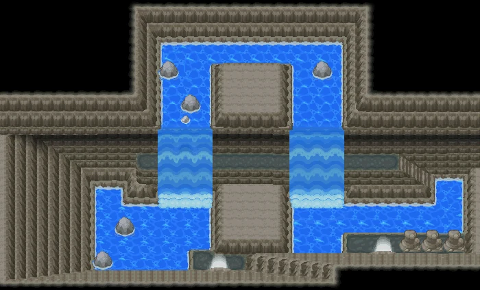
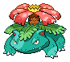
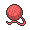
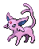
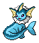
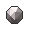
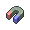
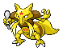
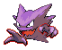

攻略大全 / 心金 / 魂银（详细图文） / 地图总览
27号道路、26号道路、冠军之路
主线
若叶镇
再次离家
从若叶镇用冲浪往东，到达27号道路。
↓ 下一站：27号道路
27号道路


27号道路是一条海边道路，西边连接若叶镇，东边连接26号道路。高低不平的地形妨碍往东走，训练家必须穿过都城瀑布。
| 训练家 | 宝可梦 | 奖金 |
|---|---|---|
| 精英训练家 Megan |  妙蛙花 Lv.32 | ₽1920 |
| 精英训练家 Blake | 三合一磁怪 Lv.33 | ₽1860 |
| 精英训练家 Brian | ₽2100 | |
| Psychic Eli | ₽1088 | |
| 精英训练家 Reena | ₽2160 |
| 宝可梦 | 版本 | 方式 | 等级 | 出现率 |
|---|---|---|---|---|
| 心金 | 草丛 | Lv.28, 30 | 40% | |
| 魂银 | 草丛 | Lv.30 | 早 20% · 日 20% · 夜 10% | |
| 魂银 | 草丛 | Lv.28 | 30% | |
| 心金 | 草丛 | Lv.30 | 5% | |
| 心金 / 魂银 | 草丛 | Lv.32 | 5% | |
| 心金 | 草丛 | Lv.28, 30 | 早 50% · 日 50% · 夜 0% | |
| 魂银 | 草丛 | Lv.28, 30 | 早 40% · 日 40% · 夜 0% | |
| 魂银 | 草丛 | Lv.30 | 早 5% · 日 5% · 夜 0% | |
| 心金 | 草丛 | Lv.28, 30 | 早 0% · 日 0% · 夜 50% | |
| 魂银 | 草丛 | Lv.28, 30 | 早 0% · 日 0% · 夜 55% | |
| 冲浪 | ||||
| 心金 / 魂银 | 冲浪 | Lv.15-20 | 90% | |
| 心金 / 魂银 | 冲浪 | Lv.20 | 10% | |
| 钓鱼 | ||||
| 心金 / 魂银 | 破旧钓竿 | Lv.10 | 85% | |
| 心金 / 魂银 | 破旧钓竿 | Lv.10 | 15% | |
| 心金 / 魂银 | 好钓竿 | Lv.20 | 40% | |
| 心金 / 魂银 | 好钓竿 | Lv.20 | 40% | |
| 心金 / 魂银 | 好钓竿 | Lv.20 | 30% | |
| 心金 / 魂银 | 好钓竿 | Lv.20 | 10% | |
| 头锤（A 组树） | ||||
| 心金 / 魂银 | 头锤 | Lv.28-29 | 50% | |
| 心金 / 魂银 | 头锤 | Lv.28-29 | 30% | |
| 心金 / 魂银 | 头锤 | Lv.28-29 | 20% | |
| 头锤（B 组树） | ||||
| 心金 / 魂银 | 头锤 | Lv.31-32 | 50% | |
| 魂银 | 头锤 | Lv.31-32 | 30% | |
| 心金 | 头锤 | Lv.31-32 | 30% | |
| 心金 / 魂银 | 头锤 | Lv.31-32 | 20% | |
| 道具 | 版本 | 位置 / 获得方法 |
|---|---|---|
| 西侧 | ||
| 心金 / 魂银 | 都城瀑布东偏南的一小块孤立陆地（需要冲浪） | |
| 东侧（需要攀瀑） | ||
| 招式学习器37（沙暴） | 心金 / 魂银 | 房子里的老奶奶给予，队伍第一只宝可梦足够亲近时 |
| 招式学习器02（龙爪） | 心金 / 魂银 | 西边那座桥南边的一小块孤立陆地（需要冲浪、潮旋） |
 红线 | 心金 / 魂银 | 东边漩涡的东北边，最低的悬崖上 |
| 心金 / 魂银 | 悬崖边，最东边那片草丛旁（隐藏道具） | |
| 心金 / 魂银 | 道路东端的一小片岸边，从26号道路过去（隐藏道具，需要冲浪） | |
| 心金 / 魂银 | 东边台阶上两块岩石中北边那块，从26号道路过去（隐藏道具） | |
| 心金 / 魂银 | 登记养鸟人 Jose 的电话后，他有时会送 | |
西侧
欢迎来到关都！
你一上岸，就引起了旁边一个男人的注意。他问你知不知道自己刚才做了什么，然后兴奋地告诉你，你刚刚踏出了进入关都地区的第一步。
都城瀑布
都城瀑布是关都西南部的一个小洞窟，连接着两个地区。没有秘传学习器07（攀瀑）和升龙徽章就无法通过，所以它也是一道天然屏障，只有最强的训练家才能继续前往石英高原的宝可梦联盟。
| 宝可梦 | 版本 | 方式 | 等级 | 出现率 |
|---|---|---|---|---|
| 心金 / 魂银 | 洞窟 | Lv.22 | 30% | |
| 心金 / 魂银 | 洞窟 | Lv.22 | 30% | |
| 心金 / 魂银 | 洞窟 | Lv.22 | 20% | |
| 心金 / 魂银 | 洞窟 | Lv.21, 23 | 15% | |
| 心金 / 魂银 | 洞窟 | Lv.20 | 5% | |
| 冲浪 | ||||
| 心金 / 魂银 | 冲浪 | Lv.20 | 60% | |
| 心金 / 魂银 | 冲浪 | Lv.20 | 30% | |
| 心金 / 魂银 | 冲浪 | Lv.20 | 10% | |
| 钓鱼 | ||||
| 心金 / 魂银 | 破旧钓竿 | Lv.10 | 85% | |
| 心金 / 魂银 | 破旧钓竿 | Lv.10 | 15% | |
| 心金 / 魂银 | 好钓竿 | Lv.20 | 60% | |
| 心金 / 魂银 | 好钓竿 | Lv.20 | 40% | |
| 道具 | 版本 | 位置 / 获得方法 |
|---|---|---|
| 心金 / 魂银 | 两道瀑布后面那条路的西端（需要冲浪、攀瀑） |
东侧
友善的礼物
去都城瀑布外的房子，会遇到一位老奶奶。听说你要去宝可梦联盟，她会问你的宝可梦对你够不够忠心。如果队伍第一只宝可梦足够亲近，她会送你招式学习器37（沙暴）。
↓ 下一站：26号道路
26号道路

26号道路是关都最长的道路之一，占据了地区西部的大部分。它从西南端的27号道路一直延伸到宝可梦联盟接待关口，关口位于西边28号道路、东边22号道路和北边冠军之路的交汇处。
| 训练家 | 宝可梦 | 奖金 |
|---|---|---|
| 钓鱼人 Scott | ₽1088 | |
| Psychic Vernon |  太阳伊布 Lv.36 | ₽1152 |
| 精英训练家 Joyce | ₽2160 | |
| 精英训练家 Gaven | ₽1920 | |
| 精英训练家 Jake |  水伊布 Lv.33 | ₽1980 |
| 精英训练家 Jamie | ₽1860 |
| 宝可梦 | 版本 | 方式 | 等级 | 出现率 |
|---|---|---|---|---|
| 心金 | 草丛 | Lv.30 | 早 5% · 日 5% · 夜 0% | |
| 心金 | 草丛 | Lv.28, 30 | 早 0% · 日 0% · 夜 35% | |
| 魂银 | 草丛 | Lv.28, 30 | 早 35% · 日 35% · 夜 0% | |
| 魂银 | 草丛 | Lv.28 | 早 0% · 日 0% · 夜 65% | |
| 魂银 | 草丛 | Lv.30 | 5% | |
| 心金 | 草丛 | Lv.28 | 30% | |
| 心金 / 魂银 | 草丛 | Lv.32 | 20% | |
| 心金 / 魂银 | 草丛 | Lv.28, 30 | 早 40% · 日 40% · 夜 5% | |
| 心金 | 草丛 | Lv.30 | 早 5% · 日 5% · 夜 0% | |
| 心金 | 草丛 | Lv.30 | 早 0% · 日 0% · 夜 10% | |
| 魂银 | 草丛 | Lv.30 | 早 0% · 日 0% · 夜 5% | |
| 冲浪 | ||||
| 心金 / 魂银 | 冲浪 | Lv.25-30 | 90% | |
| 心金 / 魂银 | 冲浪 | Lv.30 | 10% | |
| 钓鱼 | ||||
| 心金 / 魂银 | 破旧钓竿 | Lv.10 | 85% | |
| 心金 / 魂银 | 破旧钓竿 | Lv.10 | 15% | |
| 心金 / 魂银 | 好钓竿 | Lv.20 | 40% | |
| 心金 / 魂银 | 好钓竿 | Lv.20 | 30% | |
| 心金 / 魂银 | 好钓竿 | Lv.20 | 20% | |
| 心金 / 魂银 | 好钓竿 | Lv.20 | 10% | |
| 头锤（A 组树） | ||||
| 心金 / 魂银 | 头锤 | Lv.28-29 | 50% | |
| 心金 / 魂银 | 头锤 | Lv.28-29 | 30% | |
| 心金 / 魂银 | 头锤 | Lv.28-29 | 20% | |
| 头锤（B 组树） | ||||
| 心金 / 魂银 | 头锤 | Lv.31-32 | 50% | |
| 魂银 | 头锤 | Lv.31-32 | 30% | |
| 心金 | 头锤 | Lv.31-32 | 30% | |
| 心金 / 魂银 | 头锤 | Lv.31-32 | 20% | |
| 道具 | 版本 | 位置 / 获得方法 |
|---|---|---|
| 心金 / 魂银 | 道路中段，休息站西北边的树上（每天一次） | |
| 心金 / 魂银 | 东北区域，两棵树之间的悬崖边（隐藏道具） | |
| 心金 / 魂银 | 关口西南边，最北边那对台阶的西南 |
休息站
去东边路上的房子和里面的女人说话。她看你的宝可梦好像很累，让你休息一下，宝可梦也会完全回复。
星期兄妹的家
西南边草丛边缘的房子是「星期兄妹」的家。家里没人，但桌上有张字条，写着每个兄弟姐妹所在的地方。每人都会送一种不同的属性强化道具。见过全部七人后，他们还会送缎带。
| 日期 | 兄弟姐妹 | 地点 | 获得的道具 | 获得的缎带 | ||
|---|---|---|---|---|---|---|
| 星期一 | Monica（星期一） | 40号道路 | 锐利鸟嘴 | 警觉缎带 | ||
| 星期二 | Tuscany（星期二） | 29号道路 | 弯曲的汤匙 | 震惊缎带 | ||
| 星期三 | Wesley（星期三） | 愤怒之湖 | 沮丧缎带 | |||
| 星期四 | Arthur（星期四） | 36号道路 |  硬石头 | 硬石头 | 粗心缎带 | |
| 星期五 | Frieda（星期五） | 32号道路 | 毒针 | 放松缎带 | ||
| 星期六 | Santos（星期六） | 烟墨市 | 柔软沙子 | 瞌睡缎带 | ||
| 星期日 | Sunny（星期日） | 37号道路 |  磁铁 | 磁铁 | 笑容缎带 | |
宝可梦联盟接待关口
只限贵宾
所有前往石英高原的训练家都必须出示徽章来证明实力。第一个警卫会检查训练家是否集齐了城都地区的 8 枚徽章。确认你都有之后，你就能继续前进。另外两个人挡在西边和东边的出口。从北边的门进去就是冠军之路。
↓ 下一站：冠军之路
冠军之路


冠军之路是一条艰难的隧道，隔开宝可梦联盟接待关口和石英高原。它是有志的训练家证明自己的最后考验，只有最强的人才能到达另一边。
| 宝可梦 | 版本 | 方式 | 等级 | 出现率 |
|---|---|---|---|---|
| 心金 / 魂银 | 洞窟 | Lv.32 | 30% | |
| 心金 / 魂银 | 洞窟 | Lv.32 | 30% | |
| 心金 | 洞窟 | Lv.33 | 20% | |
| 魂银 | 洞窟 | Lv.33 | 20% | |
| 心金 / 魂银 | 洞窟 | Lv.34, 36 | 15% | |
| 独角犀牛 | 心金 / 魂银 | 洞窟 | Lv.35 | 5% |
| 碎岩 | ||||
| 心金 / 魂银 | 碎岩 | Lv.24-32 | 80% | |
| 心金 / 魂银 | 碎岩 | Lv.30-33 | 20% | |
| 道具 | 版本 | 位置 / 获得方法 |
|---|---|---|
| 1F | ||
| 心金 / 魂银 | 桥的东南边 | |
| 心金 / 魂银 | 中央两道岩脊中南边那道上，桥的西边（隐藏道具） 中央两道岩脊之间，桥南端的下面 | |
| 心金 / 魂银 | 中西部区域，墙边三块岩石往南一步（隐藏道具） | |
| 心金 / 魂银 | 东北区域，满是石块的窄通道里（需要怪力） | |
| 2F | ||
| 心金 / 魂银 | 西南区域，第一和第二道楼梯之间一根孤零零的石笋上（隐藏道具） | |
| 心金 / 魂银 | 东南区域，颜色较深的地面上（隐藏道具） | |
| 心金 / 魂银 | 东北区域，大石头西北边（需要怪力） | |
| 心金 / 魂银 | 南侧，台阶上方 | |
| 心金 / 魂银 | 南侧，台阶上方颜色较深的地面上（隐藏道具） | |
| 招式学习器26（地震） | 心金 / 魂银 | 西北区域，楼梯下面 |
| 3F | ||
| 心金 / 魂银 | 东南，东北角的一根石笋上（隐藏道具） | |
| 心金 / 魂银 | 东北，中央岩脊的东北端 | |
| 心金 / 魂银 | 东北，中央岩脊的东北端，一块可敲碎的岩石后面（隐藏道具，需要碎岩） | |
| 心金 / 魂银 | 西北区域，被一根大石笋挡住一半 | |
| 招式学习器79（恶之波动） | 心金 / 魂银 | 西北区域，3F 中间三块可敲碎的岩石后面（需要碎岩） |
1F
往北走，用怪力把大石头往北推一步。走下西南边的楼梯，然后转身往东拿伤药。爬上下一道楼梯过桥，再走下西边的楼梯。从桥下经过拿万灵药，然后转向西。往北走到一条满是石块的窄通道；推开这里两块大石头中南边那块，拿活力块。往西爬上西北边的梯子。
2F（西南）
往南走，沿岩脊往东。爬上东边的梯子。
3F（东南）
从地板上的洞跳下去，回到 2F。
2F（东侧）
往北走，会看到几道楼梯附近有一块大石头。用怪力把它往西推一步，就能去拿附近的全复药。再把它推回东边，继续往北，爬上东北边的梯子。
3F（东北）
往南经过地板上的洞。往西爬上岩脊，拿北墙附近的高级球。往西南走，会看到地板上还有两个洞，从北边那个跳下去。
2F（南侧）
拿ＨＰ增强剂，然后跳下台阶，爬上梯子。
3F（西侧）
沿隧道往北走到两条岔路；从这里往北，从地板上的洞跳下去。
2F
走下西边的楼梯拿招式学习器26（地震）。需要的话，推开附近的大石头能开出一条回洞口的捷径。再爬上楼梯，爬梯子回到 3F。
3F（西侧）
往东跳下台阶，再往北。经过地板上的洞拿神奇糖果。往南跳下第二道台阶，用碎岩拿招式学习器79（恶之波动）。整理一下宝可梦的状态，然后再绕过岩脊往北。出口就在北边不远处。
埋伏！
你还没走到出口，劲敌（西尔弗）又出现了。他问你是不是要去宝可梦联盟，有没有在洞里看到别的「真正的」训练家。他称他们都是没骨气的家伙，暗示自己全打败了，并承认你能走到这里，说明你不是那种人。他发誓要在这里结束你的旅程，然后和你开战。
劲敌对战 5
劲敌（西尔弗）的每只宝可梦比上次又升了几级。他的小磁怪进化成了三合一磁怪，从空木研究所偷走的宝可梦也已经进化到最终形态。他最近还添了一只勇基拉；它是超能力属性，物理防御低，被虫、幽灵、恶属性攻击打会受重伤。
| 宝可梦 | 详情 |
|---|---|
Lv.36 · 恶 / 冰 | 特性：精神力 招式：Faint Attack、冰冻之风、乱抓、电光一闪 |
Lv.38 · 毒 / 飞行 | 特性：精神力 招式：咬住、奇异之光、空气利刃、惊吓 |
| 三合一磁怪 Lv.37 · 电 / 钢 | 特性：磁力 招式：电光、电磁波、超音波、磁铁炸弹 |
 勇基拉Lv.37 · 超能力 | 特性：同步 招式：反射壁、定身法、幻象光线、自我再生 |
 鬼斯通Lv.37 · 幽灵 / 毒 | 特性：飘浮 招式：诅咒、黑色目光、奇异之光、暗影球 |
Lv.40 · 火 | 特性：猛火 招式：喷烟、高速星星、火焰轮、电光一闪 |
| 宝可梦 | 详情 |
|---|---|
Lv.36 · 恶 / 冰 | 特性：精神力 招式：Faint Attack、冰冻之风、乱抓、电光一闪 |
Lv.38 · 毒 / 飞行 | 特性：精神力 招式：咬住、奇异之光、空气利刃、惊吓 |
| 三合一磁怪 Lv.37 · 电 / 钢 | 特性：磁力 招式：电光、电磁波、超音波、磁铁炸弹 |
| 勇基拉 Lv.37 · 超能力 | 特性：同步 招式：反射壁、定身法、幻象光线、自我再生 |
| 鬼斯通 Lv.37 · 幽灵 / 毒 | 特性：飘浮 招式：诅咒、黑色目光、奇异之光、暗影球 |
Lv.40 · 水 | 特性：激流 招式：攀瀑、劈开、冰冻牙、咬碎 |
| 宝可梦 | 详情 |
|---|---|
Lv.36 · 恶 / 冰 | 特性：精神力 招式：Faint Attack、冰冻之风、乱抓、电光一闪 |
Lv.38 · 毒 / 飞行 | 特性：精神力 招式：咬住、奇异之光、空气利刃、惊吓 |
| 三合一磁怪 Lv.37 · 电 / 钢 | 特性：磁力 招式：电光、电磁波、超音波、磁铁炸弹 |
| 勇基拉 Lv.37 · 超能力 | 特性：同步 招式：反射壁、定身法、幻象光线、自我再生 |
| 鬼斯通 Lv.37 · 幽灵 / 毒 | 特性：飘浮 招式：诅咒、黑色目光、奇异之光、暗影球 |
Lv.40 · 草 | 特性：茂盛 招式：反射壁、花瓣舞、毒粉、光合作用 |
对战结束后，西尔弗承认自己也许需要时间反省，想想为什么赢不了你。他再次表示要继续变强，期待终于打败你的那一天。他让你在那之前继续修行，然后离开了。走出洞窟，就到了宝可梦联盟所在的石英高原。
↓ 下一页：石英高原
原文：Bulbapedia《Walkthrough:Pokémon HeartGold and SoulSilver/Part 15》（修订版本 4510773，），作者见原文页面历史。本页由 Eli 的杂货间翻译为中文，并有改动（重新排版、精简部分图注）。原文与译文均以 CC BY-NC-SA 2.5 授权。配图来自原站，版权归原作者与游戏厂商；地图截图来自 Bulbagarden Archives，游戏画面版权归 Nintendo / Game Freak / The Pokémon Company。